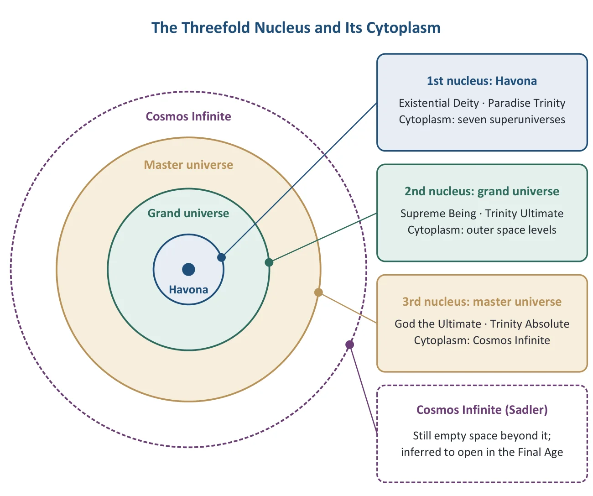

Original: Conclusões (pp. 116–122)
Terminado o corpo do seu estudo, Sadler volta às perguntas que havia formulado na Introdução e faz um balanço. O universo-mestre não pode ser descrito apenas pelo tamanho e pela duração. Visto do lado da criatura, é um lar maior, no qual nascemos, crescemos e nos preparamos para a Aventura Absoluta; visto do lado da Deidade, é o terreno do qual surgem duas Deidades experienciais e duas Trindades experienciais. Sadler responde às suas sete perguntas uma a uma e depois reúne os nove temas, princípios e padrões que reapareceram ao longo de toda a obra.
O estudo de Sadler partiu da alvorada do tempo, a abertura da segunda idade do universo. “A História Finita” começou quando Havona se apresentava diante dos superuniversos imperfeitos como a tese da perfeição, e terminou quando os superuniversos ficaram concluídos e o Ser Supremo havia emergido. “A História Subabsoluta” começou então, quando o grande universo se apresentava como uma segunda tese diante das criações do espaço exterior, e prosseguiu até que Deus, o Último, apareceu e o vasto universo-mestre ficou completo.
O ciclo de tese, antítese e síntese percorreu assim todo o seu curso duas vezes. Um terceiro ciclo foi visto apenas no seu início, não no seu fim. Neste ponto, diz Sadler, o corpo principal do estudo chegou ao seu fecho lógico. O epílogo que se segue é um empreendimento à parte, que fica fora do argumento principal e olha para além do universo-mestre.
Logo no início da Introdução, Sadler perguntou o que é realmente o universo-mestre, como os propósitos de Deus se desdobram dentro dele e a que propósito serve o próprio universo-mestre (capítulo 4). Nas Conclusões, ele julga o seu próprio trabalho com franqueza. Aprendeu algo sobre as dimensões físicas e sobre a duração das idades do universo, mas, quanto aos propósitos de Deus e do universo-mestre, talvez não tenha feito muito mais do que arranhar a superfície.
Mesmo assim, ele oferece uma conclusão. O universo-mestre é o palco da aventura de Deus na realidade relativa, isto é, nas realidades finitas e absonitas que se encontram abaixo do nível absoluto. Parte dessa aventura é descobrir se a lealdade de criaturas como nós pode ser conquistada por nada mais do que o poder persuasivo do amor.
Aqui Sadler acrescenta uma palavra sobre a atitude de fé. Os esquemas para negociar com Deus a sobrevivência, seja por meio de boas obras, seja por uma ética cuidadosamente calculada, pouco valem. O que importa, em vez disso, é a resposta ao desafio do amor, o convite a partilhar a perfeição divina. Essa resposta conduz primeiro à aventura próxima da ascensão ao Paraíso e, mais adiante, à aventura eterna de explorar quão infinito Deus é e quão infinito é o Seu amor.
Para a criatura, o universo-mestre é um “lar maior”. Ali nascemos e crescemos, tomamos as nossas decisões, ascendemos em busca de Deus, cumprimos o nosso destino finito e depois passamos ao crescimento em níveis absonitos. Na visão de Sadler, só atingimos a maioridade depois que também o nosso destino absonito tiver sido preenchido. Nesse ponto, como cidadãos experimentados da criação-mestra, estaremos qualificados para partir para a última aventura experiencial: a busca eterna do Pai como o Absoluto. Visto desse modo, toda a carreira no universo-mestre é uma preparação para o desafio final que Sadler chama de Aventura Absoluta. O universo-mestre é um berçário no qual são criados os filhos da experiência, e um dia eles tomarão parte na construção do interminável Cosmos Infinito.
Do ponto de vista da Deidade, Sadler resume os propósitos do universo-mestre em quatro itens. Dois dizem respeito à Deidade: como o Ser Supremo evolui e emerge, e como Deus, o Último, faz o mesmo. Dois dizem respeito à Trindade: a formação da Trindade Última e da Trindade Absoluta. Esses quatro estão ligados como os elos de uma corrente. Nenhuma Trindade experiencial pode existir sem a Deidade experiencial, e, a menos que existam ambas as Trindades experienciais, a Trindade das Trindades não pode ser entretecida.
2. A Trindade Absoluta — a segunda Trindade experiencial — agora em processo de factualização, consistirá em Deus, o Supremo, Deus, o Último, e o não revelado Consumador do Destino do Universo.0:12.7
Na ponta extrema dessa corrente, Sadler vê a Deidade total factualizada reunida na Trindade das Trindades existencial-experiencial. Na sua leitura, Deus, que no passado eterno Se expressou existencialmente no Paraíso e em Havona, pretende, no futuro eterno, expressar-Se experiencialmente, usando o universo-mestre como a Sua plataforma.
No final da Introdução, Sadler formulou sete perguntas (capítulo 4). Agora ele as percorre como os itens de uma lista de verificação. As suas respostas podem ser resumidas como segue.
| Pergunta | Resposta de Sadler |
|---|---|
| (1) Qual é o tamanho dos níveis do espaço? | Os seus tamanhos diferem muito. O grande universo é pequeno ao lado dos universos exteriores, e os níveis crescem acentuadamente até o Nível Espacial Quaternário. |
| (2) Quanto duram as idades do universo? | A segunda idade dura cerca de 50.000 vezes o tempo de existência da nebulosa-mãe do nosso sol (cerca de um trilhão de anos), e as idades do espaço exterior são muito mais longas. As idades também diferem em natureza. |
| (3) Como as Deidades e Trindades experienciais se relacionam com os níveis do espaço e com as idades? | Por meio da relação entre universo nuclear e universo citoplasmático. Cada nova Deidade e cada nova Trindade aparecem junto com um universo nuclear. |
| (4) Que temas, padrões e princípios podem ser encontrados? | Nove (seção 4 deste capítulo). |
| (5) Como os finalitores humanos estão envolvidos? | Os finalitores continuam a crescer através dos níveis supremo, pós-supremo e pós-último, e nunca se deparam com um limite final de crescimento. |
| (6) O universo-mestre é a última criação? | Não. É o terceiro (e talvez último) universo nuclear, e uma criação citoplasmática ainda maior deve estender-se além dele. |
| (7) Quais são o limite final e a meta final? | Isso não pode ser respondido dentro de um estudo do universo-mestre, exceto que ambos se encontram fora dele. |
Ao responder à segunda pergunta, Sadler enfatiza mais o caráter do que a duração. A primeira idade é única porque é a idade da eternidade passada. A segunda idade é igualmente única, sendo a idade em que o Ser Supremo cresce. As quatro idades do espaço exterior assemelham-se umas às outras e podem ser tratadas como um grupo: seguem-se à conclusão do crescimento do Supremo e são as idades em que Deus, o Último, cresce. Além delas, Sadler antevê uma “Idade Final” pós-última, uma idade da eternidade futura que tem um começo, mas não tem fim.
A resposta à terceira pergunta expõe o esqueleto de todo o estudo. Nem todos os universos são iguais. Alguns são núcleos, e outros são o citoplasma que depende desses núcleos. Sadler identificou três universos nucleares que aparecem um após o outro: Havona serve de núcleo aos superuniversos, o grande universo serve de núcleo aos universos exteriores, e o universo-mestre serve de núcleo ao Cosmos Infinito.

Uma nova Deidade e uma nova Trindade sempre aparecem junto com um universo nuclear. A criação central existencial está emparelhada com a Deidade existencial e a Trindade do Paraíso; o grande universo e o universo-mestre, experienciais, estão emparelhados com Deidades experienciais e Trindades experienciais. Assim como o núcleo de uma célula dirige a vida de todo o citoplasma, um universo nuclear funciona em favor da criação que cresce ao seu redor e dele depende.
A resposta à quinta pergunta é a que mais se aproxima das preocupações humanas. Segundo Sadler, os finalitores possuem a personalidade e os dotes para continuar com todo tipo de crescimento pós-Havona até o fim. Crescem para sempre e, no entanto, não encontram nenhuma barreira absoluta. Se as suas metas se ampliam mais depressa do que eles próprios crescem, nunca alcançarão de fato uma meta infinita; contudo, nesse avanço sem fim, nunca são bloqueados nem frustrados. Um viajante que caminha em direção ao horizonte nunca chega até ele, mas a própria estrada nunca se acaba.
A sétima pergunta ficou sem resposta, mas Sadler diz ter encontrado bastante em resposta à quarta. Ele nomeia nove temas que, na sua opinião, percorrem como fios todo o plano criador do universo-mestre.
| Tema | Essência |
|---|---|
| I Tese-antítese-síntese | Uma tese original é confrontada por uma antítese estimulante; as duas são unificadas e ampliadas em conjunto. |
| II Transformação da síntese | Uma grande síntese manifesta-se na emergência de uma nova Deidade; essa Deidade dá origem a uma nova Trindade, e a Trindade torna-se uma nova tese. |
| III Universos nucleares e citoplasmáticos | Havona, o grande universo e o universo-mestre tornam-se núcleos, cada um por sua vez. |
| IV A necessidade citoplasmática amplia a função nuclear | A deficiência da criação exterior chama o universo nuclear ao serviço, e, ao responder, o núcleo ultrapassa os seus limites anteriores. |
| V Unificação poder-personalidade | O crescimento experiencial, tanto no nível da Deidade como no da criatura, é uma união de poder e personalidade. |
| VI Parceria criadora da Deidade dual | A Deidade dual atua nas fronteiras da criação; a Trindade governa o universo concluído. |
| VII Divergência e convergência | A realidade ramifica-se em diversidade para evitar a monotonia e é reunida novamente na Deidade experiencial. |
| VIII Coerência orgânica | Como um organismo vivo, o universo é coerente nos seus atos e nos seus resultados. Onipotência não significa fazer o impossível. |
| IX A trinitarização como escape da infinitude | Assim como Deus “escapou” dos limites da infinitude por meio da trinitarização, as Deidades experienciais procuram “entrar” na infinitude. |
O quarto princípio põe o terceiro em movimento. Uma criação citoplasmática começa por carecer de algo que o universo nuclear tinha (ou tem). Aos superuniversos falta a perfeição de Havona; aos universos exteriores, ao que parece, faltará a experiência finita. Essa carência torna-se um desafio para a criação nuclear, que cresce ao responder com serviço. Na idade presente, Havona está acrescentando crescimento evolucionário à sua perfeição eterna (capítulo 5). Na próxima idade, os superuniversos, estabelecidos em luz e vida, acrescentarão possibilidades de crescimento ainda desconhecidas para além dos seus limites evolucionários atuais. Sadler vai um passo adiante e conjectura que aquilo que o Cosmos Infinito pode dar ao universo-mestre é a abertura do crescimento num nível “coabsoluto” para criaturas que tenham esgotado todas as possibilidades finitas e absonitas.
O quinto princípio enfia a Deidade e a humanidade num mesmo fio. Para um ser humano, a união de poder e personalidade acontece quando a mente, que governa a matéria, se coloca sob a condução do espírito pela livre escolha da personalidade. No nível da Deidade, significa que todas as coisas, significados e valores de um dado nível, isto é, toda a sua realidade material, mental e espiritual, são reunidos e consolidados numa Deidade experiencial: o finito no Ser Supremo, o absonito em Deus, o Último (capítulos 7 e 13).
No sexto princípio, Sadler observa como as parcerias da Deidade dual mudam de uma idade para outra. Na primeira idade, o Pai-Filho, na segunda, o Filho-Espírito, e, nas idades do espaço exterior, o Espírito-Supremo assumem a dianteira no trabalho pioneiro. A corrente continua até o Supremo-Último e além, mas, dentro do universo-mestre, só pode ser seguida até o Espírito-Supremo. Essa restrição é suspensa novamente no epílogo.
O sétimo princípio é ilustrado pelos Sete Espíritos Mestres. Eles expressam a unidade da Deidade do Paraíso de sete modos diferentes, e essa diversidade é reunida finitamente no Supremo e absonitamente no Último. Cada superuniverso desenvolve uma cultura distintiva que reflete a natureza do Espírito Mestre que o supervisiona, e, depois que o Ser Supremo tiver emergido plenamente, as sete culturas fundir-se-ão numa só. Sadler compara isso ao modo como as raças de um mundo evolucionário constroem cada uma a sua própria cultura e depois se misturam dentro da civilização adâmica.
Se os superuniversos têm sete culturas, sugere Sadler, pode haver quarenta e nove no Nível Espacial Primário e ainda mais nos níveis além dele. Que cada um dos sete superuniversos esteja sob um dos Sete Espíritos Mestres é o ensinamento de O Livro de Urântia. A idéia de que a diversidade no espaço exterior se multiplica por potências de sete, porém, é uma conjectura de Sadler, uma extensão do padrão de divergência e convergência. Nenhum número desse tipo aparece no texto.
O próprio Sadler admite que o nono princípio não foi, a rigor, aprendido do estudo do universo-mestre. É um princípio anterior ao universo-mestre, e talvez também posterior a ele. No prólogo, Deus libertou-Se das limitações inerentes ao estado de infinitude por meio da trinitarização (capítulo 1). No final do estudo principal, a investigação esbarrou na Barreira da Infinitude e depois no Impasse dos Absolutos, e o esforço para unificar a segunda Trindade experiencial chegou a um impasse (capítulo 16). Sadler anuncia que no epílogo se encontrará de novo uma situação semelhante, mas com a direção invertida. Deus saiu da infinitude; as Deidades experienciais procuram entrar nela.